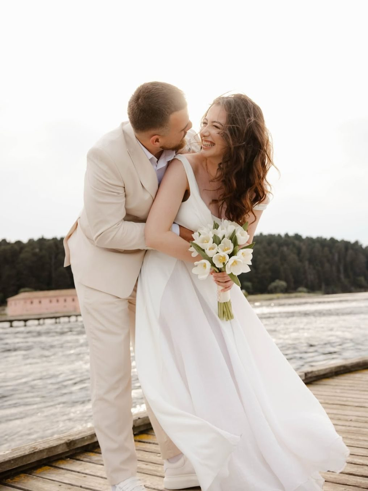

Seti i martesës
Professional photography for your special day.
€300
WEDDING PHOTOGRAPHY · ALBANIA
Momente të vërteta, dritë e butë dhe histori që mund t'i ndjesh përsëri, edhe shumë vite më vonë.
Shiko historitë ↓Cocographera by Esi Rabeli captures weddings, couples and elopements through documentary photography, editorial storytelling and a cinematic aesthetic. For weddings in Tirana and across Albania, the focus is on real emotions, natural light and authentic moments.
I do not photograph only your day. I preserve its feeling.
I am Esi Rabeli, a photographer specialising in weddings and intimate moments. I work quietly, notice the details and capture the small seconds that never repeat.
My approach blends documentary storytelling with an editorial and cinematic aesthetic — elegant, natural and emotional.
Let’s create your story →A small selection of the atmosphere, emotions and details of your day.
Nga përgatitjet e para deri te vallëzimi i fundit, historia ndërtohet me kujdes, pa e humbur spontanitetin.
Professional photography for your special day.
€300Capturing the most important moments of your ceremony.
€150Atmosphere, emotions, dancing and celebration until the very end.
€300* Travel costs are not included in the price and vary depending on the event location.
Cocographera offers wedding photography in Tirana and across different locations in Albania. The photographer is available to travel; arrangements and any related costs are to be evaluated together.
The approach combines documentary photography, editorial storytelling and a cinematic aesthetic, focusing on real emotions and spontaneous moments.
Yes. The available packages include photography and Photo + Video options; details and prices are shown in the Packages section.
Write directly on Instagram, with a few words about your wedding date and location. Cocographera will get back to you to discuss the details.
Tell me a little about you, your wedding date and location. Let’s talk about the most beautiful way to tell your story.
Write directly on Instagram.